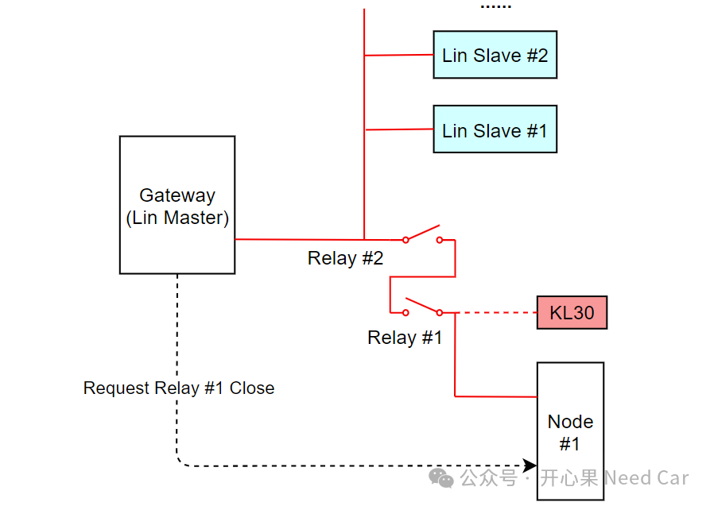
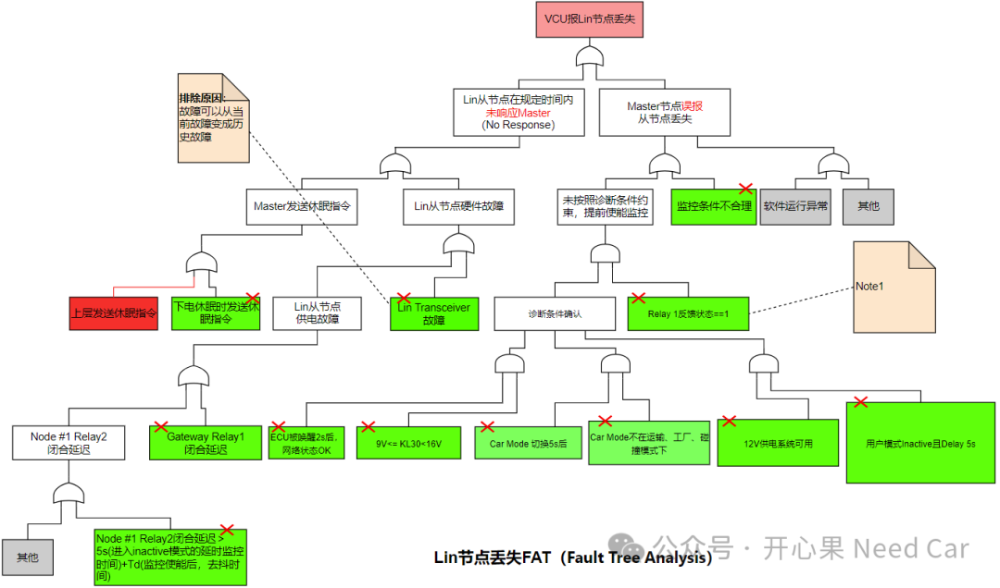
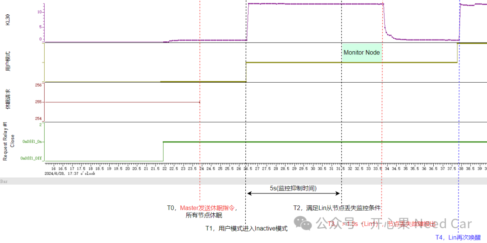

对于排查问题的小伙伴来说，最苦恼的莫过于：只有问题，没有分析数据。这种场景，只能先分析存储的故障快照数据（snapshot data），可是，受限于快照数据的数据量，它并不能提供足够多的信息帮助我们精准定位问题。如果问题还是偶发的类型，可以想象，排查问题的工程师有多苦恼。如果问题可以复现，把需要的信号log出来，会极大地提升问题定位和解决速度。可是，现实往往是：很难复现问题。有时，问题的复现还需要一些运气。
所以，没有数据分析，bug问题就可以"摆烂"吗？当然不能，不去努力挣扎一番，给出一个态度，怎么可以？本文，基于一个工程问题，聊一聊我是如何排查此类问题的。整车测试中，发现某网关节点（Gateway，Lin Master）报对应子节点（Lin Slave #1、Lin Slave #2）的通信丢失。其中，Lin从节点的供电受到Gateway和Node #1的共同控制，只有两者同时将各自的继电器（Relay）闭合，Lin从节点才能获得工作所需的KL30电。其中，Node #1的继电器（Relay #1）闭合受Gateway控制，即：Gateway请求Node #1闭合Relay #1时，Node #1去执行Relay #1闭合。示意如下：
但是，报问题的小伙伴只有故障信息，没有提供故障发生时的总线数据。所以，当问题跨节点，且没有排查问题所需信息时，问题的排查难度可想而知。似乎，我们只能碰运气：不断调整测试方案，进行压力测试，把问题复现出来。所以，面对这样的困境，我们该怎样"硬刚"呢？我们还能做些什么呢？如何突破呢？本文，聊一聊我的解题思路。（一）熟悉控制器的基本电路
解决bug，首先，需要对目标控制器的基本原理图熟悉。如果涉及到跨节点的问题，还需要熟悉整车的网络拓扑。如上图，便是本文关注的关系拓扑。（二）创建FTA（Fault Tree Analysis）
当没有足够的数据分析时，正向梳理，可以进行FTA分析，以此不断地收缩问题点。即：正向地证明或者排查某些因素，将问题圈定到更小的范围，进而针对性地设计测试用例。
在实际工程bug排查中，可以使用FTA分析，与门和或门就足够使用，其他符号用的较少。然后，根据需求和可能的场景不断地罗列每个层级的关系，相邻层级之间是直接因素，然后一层一层地向下拆解，直到穷尽脑袋里能想到的场景。如下，便是本文问题的FTA分析图，由于没有总线数据，我们就按照如下的场景逐个设计测试用例，当然，有时也存在运气成分（恰好测试到想不到的bug场景）。或许，越努力越幸运就是这个意思吧。本文FTA分析如下所示（部分信息屏蔽）：
对于主节点报Lin从节点通信丢失，直接原因可以分为两个因素：Lin从节点在一定时间没有响应Master，Master误报从节点丢失。针对这两个因素，再拆解直接原因，如下：
1、Lin从节点在一定时间没有响应Master
2、Master误报从节点丢失
诊断监控条件未覆盖特定工况；
诊断提前监控;
软/硬件异常;
......
（三）设计测试用例
通过如上的FTA分析，不断地调整压测方案。提示：压测一定量没有复现时，说明测试场景和问题场景存在偏差，不要徒增量的累计，需要适时地调整测试方案。当问题被复现以后，根因和解决措施也就不再迷茫。
本文问题通过不断调整测试方案，最终把问题锁定到Master发送休眠指令。这个点将问题表现出来以后，即可围绕该点进行深入软/硬件的分析。
（四）根因分析
1、问题数据分析
拿到复现地总线数据以后，直接拉出关键信息，通过分析即可快速锁定问题原因。如下所示：

T0时刻，Master发送了Lin的休眠命令，使得网段内，所有Lin节点休眠（包括主节点自己）。在网关节点、Node #1节点被供电唤醒到T0这个时间尺度内，由于Node #1的Relay #1没有闭合，从节点没有供电，所以，总线上会看到错误帧（Slave no responsing）。Master发送休眠指令（PID = 0x3C）之前，主节点无法唤醒从节点，出现从节点无响应错误，示意如下：T1时刻，用户模式进入inactive模式，延时5s使能节点丢失诊断；T2时刻，满足监控条件，进行去抖（eg：1.5s）处理；T3时刻，经过去抖，节点仍然丢失，Master报从节点通信丢失。进一步分析Master发送休眠命令的条件，发现：发送休眠命令时机与诊断Lin从节点丢失条件相互独立，彼此之间没有考虑。即：诊断节点丢失时，没有考虑休眠指令的发送，发送休眠指令时也没有考虑lin从节点监控是否使能。对于第二点则需要分析Node #1为什么收到了闭合Realy #1的请求，没有及时闭合的问题，而这个控制器不属于我的管控范畴，不赘述。2、正常数据分析
看到了问题时的故障数据，自然也会和正常时的数据对比一下，没出问题的数据流如下所示：
通过分析，发现：正常时，Master也会发送休眠指令，同时，在Lin没有通信的时候，也会满足监控条件，但是，为什么没有将Lin从节点丢失故障报出来呢？也就是：为什么在没有Lin通信的情况下，（1）Node #1的Relay #1延迟闭合，网关节点（Lin Master）报从节点通信丢失；（2）Node #1的Relay #1没有延迟闭合，网关节点（Lin Master）不报从节点通信丢失？所以，问题可以进一步收缩到Lin从节点丢失的监控对象，通过两组数据对比，发现：软件中，用Lin的状态判断从节点是否丢失。（1）当Relay #1延迟闭合，发送休眠指令之前，总线有错误帧（Slave no responsing），所以，在满足监控条件以后，发现状态一直是slave no response，所以，会将从节点通信丢失故障报出；
（2）当Relay #1没有延迟闭合，发送休眠指令之前，总线没有错误帧，在满足监控条件以后，监控的状态一直OK，所以，不会报从节点通信丢失故障。综上，问题的根是因为Node #1的Relay #1延迟闭合导致问题。但是，Lin从节点通信丢失监控也确确实实有些不妥，即：主节点发送休眠指令以后，在没有唤醒网段的情况下，本不应该进行从节点通信丢失的诊断。或者说，Master没有发送Header，从节点怎么response？如果此时还监控从节点丢失，从节点岂不是很无辜。网关节点增加Lin节点的诊断监控条件，具体可以细分为两个措施，如下：
修复措施一：增加诊断条件。Lin节点监控时，考虑Master是否有休眠指令，如果发送了休眠指令，则不对从节点通信丢失进行监控；
修复措施二：优化监控逻辑。Master发送Lin休眠指令时，需要确认lin从节点是否处于监控状态。如果依然满足监控状态，需要关闭对应的监控逻辑。为什么说Node #1解决延迟闭合Relay #1是最优方案呢？在整车问题表现中，所有问题现象由Node #1问题诱发，虽然网关节点的通信丢失监控存在漏洞，但是，它属于次级问题。即使修复网关节点的通信丢失监控问题，Node #1的问题也需要解决。所以，从成本考虑，Node #1解决延迟闭合Relay #1是最优方案，避免网关节点的软件更改。因为量产阶段的软件修改，从方案论证、测试到OTA的各个环节都是额外成本。可能事后看这个问题数据，一眼就能看出问题所在。但是，在测试出问题之前，我们并知道从节点的供电何时下拉，也不知道整车上这个工况该怎么操作（实际是一个很不寻常的用车操作），所以，并不能因为我们事后看到了问题数据，就觉得问题是简单的。即使在明显不过的问题，也需要我们提前储备足够的知识，当问题复现时，可以敏锐的注意到，并且把因果闭环。
因为能感同身受一线工程师，所以，向所有的一线工程师致敬，也向参与工程bug解决的各个角色工程师致敬！点击下方关注，一起聊聊Autosar/嵌入式，如果需要，联系作者进群，给你更专业的解答